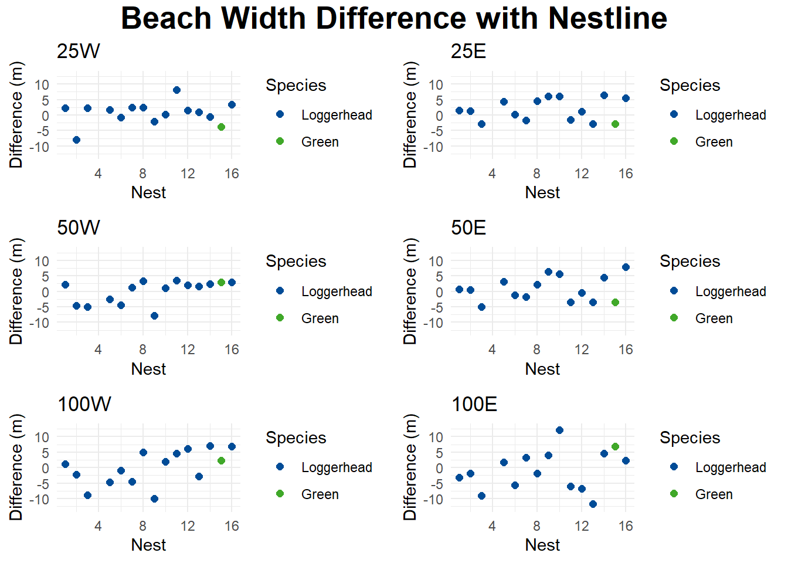
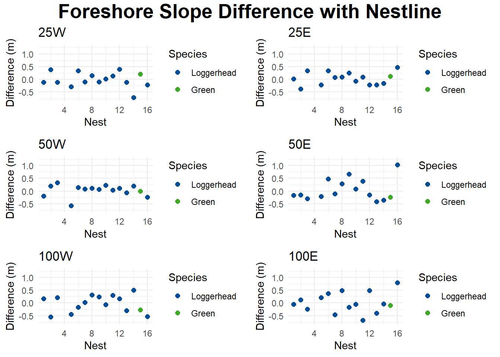

Chapter 2 Methods
knitr::opts_chunk$set(echo = FALSE, warning = FALSE, message = FALSE)
library(gsheet)## Warning: package 'gsheet' was built under R version 4.1.1library(tidyverse)## -- Attaching packages --------------------------------------- tidyverse 1.3.1 --## v ggplot2 3.3.5 v purrr 0.3.4
## v tibble 3.1.2 v dplyr 1.0.7
## v tidyr 1.1.3 v stringr 1.4.0
## v readr 1.4.0 v forcats 0.5.1## -- Conflicts ------------------------------------------ tidyverse_conflicts() --
## x dplyr::filter() masks stats::filter()
## x dplyr::lag() masks stats::lag()library(ggpubr)
library(asbio)## Warning: package 'asbio' was built under R version 4.1.2## Loading required package: tcltklibrary(tidyr)
options(scipen = 999)
#call in data
data <- as_tibble(gsheet2tbl("https://docs.google.com/spreadsheets/d/1IRNiGVwJtBPyLTnl4HaVTo0rfIX90HlRSm7P0EH3_Zs/edit"))2.1 Data
The sea turtle nest site data came from Pensacola beach in the summer of 2021. The data was recorded by Madison Williams using GPS technology. Data collection was guided and advised by Dr. Philip Schmutz for use by the Earth and Environmental Science department at the University of West Florida.
2.1.1 Variables
The following variables were measured:
- Foreshore slope
- Beach slope
- Beach width
- Foredune height
The variables were measured at the following locations:
- Nest line
- 25 meters west
- 25 meters east
- 50 meters west
- 50 meters east
- 100 meters west
- 100 meters east
2.2 Statistical Methods
2.2.1 Paired T-Test
Paired t-tests are used to compare two dependent means, which implies that each observation coincides with another specific observation
Formula
The formula to calculate \(t_{0}\) for a paired t-test is as follows: \[t_{0}=\frac{\overline{d}}{s_{d}/\sqrt{n}}\]
- \(\overline{d}\) is the average of the differences of the observations
- \(s_{d}\) is the sample standard deviation
- \(n\) is the sample size (number of pairs)
Assumptions
- Observations are randomly selected
- Differences between pairs are approximately normally distributed
- No extreme outliers exist
Interpretations
\(t_{0}\) can be converted to a p-value by using a table of t-distribution critical values, or a t-score to p-value calculator. The p-value is then compared to the significance level (\(\alpha\)). If the p-value is less than the significance level, the null hypothesis can be rejected with a confidence level of \((1-\alpha)*100\)%
Inference
Hypothesis testing can be performed from a paired t-test
- \(H_{0}: \mu_{1} = \mu_{2}\)
- \(H_{1}: \mu_{1} \ne \mu_{2}\)
2.2.2 Wilcoxon signed-rank test
The Wilcoxon signed-rank test is used for dependent data when the assumptions for a paired t-test are not met.
The Wilcoxon signed-rank test is performed by first calculating differences between each pair of data. The magnitude of the differences are then ranked 1 for the smallest difference, 2 for the next smallest difference, etc. Identical values or ties are assigned the average values for the ranks they would be given. (If observations of ranks 4, 5, 6, and 7 are all the same, they will all be given the rank of 5.5)
Formula
The formula to calculate \(W\) for the Wilcoxon signed-rank test is as follows: \[W = \sum_{i=1}^{n}Z_{i}R_{i}\]
- \(n\) is the sample size (number of pairs)
- \(Z_{i}\) is an indicator variable; \(Z_{i} = 0\) if \(x_{i} - m_{0}\) is negative and \(Z_{i} = 1\) if \(x_{i} - m_{0}\) is positive
- \(m_{0}\) is the sample median
- \(x_{i}\) is the ith observation
- \(R_{i}\) is the rank of the ith observation
Assumptions
- The random variable is continuous
- The probability density function of x is symmetric
Interpretation
\(W\) can be converted to a p-value by using a table of critical values, or a specialized calculator. The p-value is then compared to the significance level (\(\alpha\)). If the p-value is less than the significance level, the null hypothesis can be rejected with a confidence level of \((1-\alpha)*100\)%
Inference
Hypothesis testing can be performed from the Wilcoxon signed-rank test
- \(H_{0}: m = m_{0}\)
- \(H_{1}: m\ne m_{0}\)
2.2.3 Confidence Intervals
Confidence intervals are used to calculate a range of values that are likely to obtain the true mean with a high degree of probability.
Formula
The formula for a confidence interval for a paired t-test is as follows:
- \((\overline{d} - t_{\alpha/2}*s_{d}/\sqrt{n}, \overline{d} + t_{\alpha/2}*s_{d}/\sqrt{n})\)
- \(\overline{d}\) is the mean of the differences
- \(t_{\alpha/2}\) is the test statistic
- \(\alpha\) is the significance level
- \(s_{d}\) is the standard deviation of the differences
- \(n\) is the sample size
The formula for a confidence interval for the median is as follows: \[(x_{j},x_{k})\] where \(x_{j}\) is the jth observation, and \(x_{k}\) is the kth observation
- \(j = n*q - z_{\alpha}\sqrt{n*q*(1-q)}\)
- \(k = n*q + z_{\alpha}\sqrt{n*q*(1-q)}\)
- \(n\) is the sample size
- \(q\) is the quantile of interest, 0.5 is used for the median
- \(z_{\alpha}\) is the critical value
- \(\alpha\) is the significance level
Interpretation
The confidence interval is interpreted based on the significance level used. We can be \((1-\alpha)*100\)% confident that the true mean is between the calculated values. For example, a significance level of \(\alpha = 0.05\) and a confidence interval of \((0.15, 0.25)\) means that we are 95% confident that the true mean of the given values are between 0.15 and 0.25.
2.3 Analysis of the Current Data
With the given set of data, the paired t-tests were appropriate. The data was approximately normally distributed, and no extreme outliers existed. However, the Wilcoxon signed-rank test was performed anyway for additional analysis. Foreshore slope, beach slope, beach width, and foredune height were all analyzed to find differences between locations. The nest lines were compared to every other variable, 25W, 25E, 50W, 50E, 100W, 100E. Tests were also performed to compare each west variable with its respective east variable. Results for the paired t-test are shown as the mean with the corresponding confidence interval. Results for the Wilcoxon signed-rank test are shown as the median with the corresponding median confidence interval. Below are some of the QQ plots used to assess normality.

2.4 Analysis Results
2.4.1 Foreshore Slope

The test results for the paired t-test and the Wilcoxon signed-rank test are shown below, as well as plots of the individual differences between the nest line and other locations. Statistical significance was defined as \(\alpha = 0.1\)

| mean difference (90% CI) | p-value paired t | median difference (90% CI) | p-value Wilcoxon signed rank | |
|---|---|---|---|---|
| 25W | 0.36 (-0.29, 1.00) | 0.347 | 0.30 (-0.34, 1.14) | 0.363 |
| 25E | 0.71 (0.16, 1.25) | 0.038 | 0.58 (0.00, 1.45) | 0.036 |
| 50W | -0.25 (-0.91, 0.41) | 0.508 | -0.31 (-0.98, 0.63) | 0.451 |
| 50E | 0.94 (0.05, 1.83) | 0.084 | 1.29 (-0.20, 2.71) | 0.079 |
| 100W | 1.16 (0.32, 2.01) | 0.030 | 0.68 (0.25, 2.93) | 0.045 |
| 100E | 0.92 (0.33, 1.50) | 0.015 | 0.73 (-0.10, 2.13) | 0.028 |
| East vs. West | mean difference (90% CI) | p-value paired t | median difference (90% CI) | p-value Wilcoxon signed rank |
|---|---|---|---|---|
| 25m | 0.35 (-0.42, 1.13) | 0.434 | -0.13 (-0.92, 0.82) | 0.572 |
| 50m | -1.20 (-2.18, -0.21) | 0.051 | -0.40 (-3.42, 0.20) | 0.052 |
| 100m | 0.25 (-0.58, 1.07) | 0.606 | 0.54 (-0.31, 1.01) | 0.451 |
These tables show both the paired t-test results and the Wilcoxon signed-rank test results for the foreshore slope. Comparisons include only the loggerhead turtle nests. When comparing the nest line to outside locations, 25E, 50E, 100E, and 100W all have statistically different means. When comparing the measurements from each side together, there is a statistically significant difference between the means of 50W and 50E. All of the statistically significant variables were significant in both the paired t-test and the Wilcoxon signed-rank test.
| mean difference (90% CI) | p-value paired t | median difference (90% CI) | p-value Wilcoxon signed rank | |
|---|---|---|---|---|
| 25W | 0.58 (-0.14, 1.29) | 0.176 | 0.34 (-0.34, 1.79) | 0.211 |
| 25E | 0.75 (0.24, 1.26) | 0.021 | 0.66 (0, 1.45) | 0.024 |
| 50W | -0.10 (-0.77, 0.58) | 0.806 | -0.01 (-0.98, 0.76) | 0.755 |
| 50E | 0.83 (-0.01, 1.68) | 0.105 | 1.17 (-0.69, 2.71) | 0.106 |
| 100W | 1.26 (0.46, 2.05) | 0.015 | 0.82 (0.25, 2.93) | 0.025 |
| 100E | 1.07 (0.47, 1.68) | 0.007 | 0.84 (-0.10, 2.17) | 0.016 |
| East vs. West | mean difference (90% CI) | p-value paired t | median difference (90% CI) | p-value Wilcoxon signed rank |
|---|---|---|---|---|
| 25m | 0.17 (-0.62, 0.96) | 0.709 | 0.23 (-0.92, 1.07) | 0.798 |
| 50m | -0.93 (-1.96, 0.10) | 0.134 | -0.29 (-3.42, 0.28) | 0.106 |
| 100m | 0.18 (-0.59, 0.95) | 0.68 | 0.45 (-0.68, 1.01) | 0.551 |
These tables show both the paired t-test results and the Wilcoxon signed-rank test results for the foreshore slope. Comparisons include loggerhead nests and the green turtle nest. When comparing the nest line to outside locations, 25E, 100E, and 100W all have statistically different means. When comparing the measurements from each side together, there are no statistically significant comparisons. All of the statistically significant variables are significant in both the paired t-test and the Wilcoxon signed-rank test.
2.4.2 Beach Slope
| mean difference (90% CI) | p-value paired t | median difference (90% CI) | p-value Wilcoxon signed rank | |
|---|---|---|---|---|
| 25W | 0.41 (0.16, 0.66) | 0.012 | 0.33 (-0.04, 0.64) | 0.024 |
| 25E | 0.29 (0.05, 0.53) | 0.051 | 0.33 (0.05, 0.37) | 0.033 |
| 50W | 0.26 (0.03, 0.49) | 0.068 | 0.34 (-0.08, 0.59) | 0.103 |
| 50E | 0.42 (0.17, 0.68) | 0.010 | 0.33 (0.15, 0.62) | 0.010 |
| 100W | <0.01 (-0.26, 0.25) | 0.992 | <0.01 (-0.18, 0.14) | 0.754 |
| 100E | 0.41 (0.12, 0.69) | 0.027 | 0.185 (0.08, 0.81) | 0.012 |
| East vs. West | mean difference (90% CI) | p-value paired t | median difference (90% CI) | p-value Wilcoxon signed rank |
|---|---|---|---|---|
| 25m | -0.12 (-0.48, 0.23) | 0.554 | 0.20 (-0.22, 0.46) | 0.286 |
| 50m | -0.16 (-0.37, 0.04) | 0.184 | -0.19 (-0.32, 0.06) | 0.187 |
| 100m | -0.41 (-0.74, -0.07) | 0.052 | -0.40 (-0.55, -0.26) | 0.052 |
These tables show both the paired t-test results and the Wilcoxon signed-rank test results for the beach slope. Comparisons include loggerhead nests only. When comparing the nest line to outside locations, 25E, 25W, 50E, 50W, and 100E all have statistically different means. When comparing the measurements from each side together, 100W and 100E are statistically significant. The comparison between the nest line and 50W is significant in the paired t-test, but not in the Wilcoxon signed-rank test.
| mean difference (90% CI) | p-value paired t | median difference (90% CI) | p-value Wilcoxon signed rank | |
|---|---|---|---|---|
| 25W | 0.36 (0.11, 0.61) | 0.023 | 0.26 (-0.15, 0.64) | 0.044 |
| 25E | 0.25 (0.02, 0.48) | 0.081 | 0.31 (-0.17, 0.37) | 0.057 |
| 50W | 0.27 (0.05, 0.48) | 0.046 | 0.34 (-0.08, 0.59) | 0.065 |
| 50E | 0.36 (0.09, 0.62) | 0.032 | 0.26 (0.10, 0.62) | 0.033 |
| 100W | -0.07 (-0.34, 0.20) | 0.65 | -0.06 (-0.34, 0.14) | 0.514 |
| 100E | 0.24 (-0.16, 0.63) | 0.308 | 0.16 (0.03, 0.81) | 0.065 |
| East vs. West | mean difference (90% CI) | p-value paired t | median difference (90% CI) | p-value Wilcoxon signed rank |
|---|---|---|---|---|
| 25m | -0.11 (-0.44, 0.22) | 0.562 | 0.14 (-0.22, 0.46) | 0.293 |
| 50m | -0.09 (-0.32, 0.14) | 0.517 | -0.18 (-0.32, 0.19) | 0.443 |
| 100m | -0.31 (-0.66, 0.05) | 0.150 | -0.38 (-0.55, 0.01) | 0.148 |
These tables show both the paired t-test results and the Wilcoxon signed-rank test results for the beach slope. Comparisons include loggerhead nests and the green turtle nest. When comparing the nest line to outside locations, 25E, 25W, 50E, 50W, and 100E all have statistically different means. When comparing the measurements from each side together, there are no statistically significant comparisons. The comparison between the nest line and 100W is not significant in the paired t-test, but it was in the Wilcoxon signed-rank test.
2.4.3 Beach Width

| mean difference (90% CI) | p-value paired t | median difference (90% CI) | p-value Wilcoxon signed rank | |
|---|---|---|---|---|
| 25W | 1.00 (-0.68, 2.68) | 0.312 | 1.60 (-0.60, 2.46) | 0.090 |
| 25E | 2.04 (0.40, 3.67) | 0.046 | 1.45 (-1.58, 5.52) | 0.103 |
| 50W | -0.30 (-2.07, 1.48) | 0.772 | 1.48 (-4.47, 2.36) | 0.802 |
| 50E | 1.10 (-0.79, 2.98) | 0.322 | 0.58 (-1.83, 4.41) | 0.380 |
| 100W | -0.1 (-2.78, 2.58) | 0.948 | 0.20 (-4.57, 4.98) | 0.950 |
| 100E | -1.30 (-4.32, 1.73) | 0.462 | -1.86 (-6.08, 3.19) | 0.451 |
| East vs. West | mean difference (90% CI) | p-value paired t | median difference (90% CI) | p-value Wilcoxon signed rank |
|---|---|---|---|---|
| 25m | 1.04 (-1.57, 3.65) | 0.493 | -1.54 (-5.95, 3.75) | 0.490 |
| 50m | -1.39 (-3.97, 1.18) | 0.356 | -0.99 (-5.00, 2.44) | 0.451 |
| 100m | 1.20 (-2.65, 5.04) | 0.591 | 3.41 (-6.40, 6.85) | 0.572 |
These tables show both the paired t-test results and the Wilcoxon signed-rank test results for the beach width. Comparisons include loggerhead nests only. When comparing the nest line to outside locations, 25E and 25W both have statistically different means. When comparing the measurements from each side together, there are no statistically significant comparisons. The comparison between the nest line and 25W is not significant in the paired t-test, but it is in the Wilcoxon signed-rank test. The comparison between the nest line and 25E is significant in the paired t-test, but not in the Wilcoxon signed-rank test.
| mean difference (90% CI) | p-value paired t | median difference (90% CI) | p-value Wilcoxon signed rank | |
|---|---|---|---|---|
| 25W | 0.68 (-0.98, 2.33) | 0.482 | 1.53 (-0.71, 2.46) | 0.244 |
| 25E | 1.72 (0.10, 3.33) | 0.082 | 1.36 (-1.61, 5.52) | 0.164 |
| 50W | -0.07 (-1.76, 1.61) | 0.94 | 1.62 (-4.47, 2.89) | 0.977 |
| 50E | 0.79 (-1.03, 2.62) | 0.457 | 0.53 (-3.40, 4.41) | 0.551 |
| 100W | 0.07 (-2.44, 2.57) | 0.964 | 1.22 (-4.57, 4.98) | 0.842 |
| 100E | -0.75 (-3.71, 2.20) | 0.661 | -1.85 (-6.08, 3.94) | 0.670 |
| East vs. West | mean difference (90% CI) | p-value paired t | median difference (90% CI) | p-value Wilcoxon signed rank |
|---|---|---|---|---|
| 25m | 1.04 (-1.38, 3.46) | 0.462 | -1.03 (-5.95, 3.75) | 0.410 |
| 50m | -0.87 (-3.42, 1.69) | 0.560 | 0.07 (-5.00, 3.16) | 0.755 |
| 100m | 0.82 (-2.80, 4.44) | 0.696 | 2.49 (-6.40, 6.85) | 0.670 |
These tables show both the paired t-test results and the Wilcoxon signed-rank test results for the beach width. Comparisons include loggerhead nests and the green turtle nest. When comparing the nest line to outside locations 25E has a statistically different mean. When comparing the measurements from each side together, there are no statistically significant comparisons. The comparison between the nest line and 25E is significant in the paired t-test, but not in the Wilcoxon signed-rank test.
2.4.4 Foredune Height


| mean difference (90% CI) | p-value paired t | median difference (90% CI) | p-value Wilcoxon signed rank | |
|---|---|---|---|---|
| 25W | -0.02 (-0.16, 0.12) | 0.783 | -0.10 (-0.12, 0.15) | 1.000 |
| 25E | 0.03 (-0.09, 0.15) | 0.655 | 0.05 (-0.21, 0.25) | 0.660 |
| 50W | 0.03 (-0.08, 0.14) | 0.610 | 0.10 (-0.06, 0.20) | 0.315 |
| 50E | 0.08 (-0.12, 0.28) | 0.504 | -0.13 (-0.21, 0.39) | 0.754 |
| 100W | -0.01 (-0.17, 0.15) | 0.897 | 0.09 (-0.30, 0.24) | 0.950 |
| 100E | 0.03 (-0.17, 0.22) | 0.804 | -0.05 (-0.24, 0.36) | 0.900 |
| East vs. West | mean difference (90% CI) | p-value paired t | median difference (90% CI) | p-value Wilcoxon signed rank |
|---|---|---|---|---|
| 25m | 0.05 (-0.14, 0.24) | 0.627 | -0.04 (-0.34, 0.09) | 0.530 |
| 50m | -0.05 (-0.29, 0.20) | 0.740 | 0.07 (-0.36, 0.34) | 0.900 |
| 100m | -0.04 (-0.33, 0.25) | 0.813 | 0.04 (-0.54, 0.45) | 0.900 |
These tables show both the paired t-test results and the Wilcoxon signed-rank test results for foredune height. Comparisons include loggerhead nests only. When comparing the nest line to outside locations there are no statistical differences for any variables. When comparing the measurements from each side together, there are no statistically significant comparisons.
| mean difference (90% CI) | p-value paired t | median difference (90% CI) | p-value Wilcoxon signed rank | |
|---|---|---|---|---|
| 25W | >0.01 (-0.14, 0.13) | 0.922 | -0.10 (-0.12, 0.20) | 0.842 |
| 25E | 0.04 (-0.07, 0.15) | 0.567 | 0.07 (-0.21, 0.25) | 0.590 |
| 50W | 0.03 (-0.07, 0.13) | 0.608 | 0.08 (-0.06, 0.20) | 0.268 |
| 50E | 0.06 (-0.13, 0.25) | 0.604 | -0.15 (-0.24, 0.39) | 0.887 |
| 100W | -0.03 (-0.18, 0.12) | 0.737 | 0.01 (-0.30, 0.24) | 0.755 |
| 100E | 0.02 (-0.16, 0.20) | 0.849 | -0.05 (-0.24, 0.36) | 0.977 |
| East vs. West | mean difference (90% CI) | p-value paired t | median difference (90% CI) | p-value Wilcoxon signed rank |
|---|---|---|---|---|
| 25m | 0.04 (-0.13, 0.22) | 0.663 | <0.01 (-0.34, 0.09) | 0.629 |
| 50m | -0.03 (-0.25, 0.20) | 0.835 | 0.15 (-0.36, 0.34) | 1.000 |
| 100m | -0.05 (-0.32, 0.22) | 0.753 | -0.01 (-0.54, 0.45) | 0.842 |
These tables show both the paired t-test results and the Wilcoxon signed-rank test results for foredune height. Comparisons include loggerhead nests and the green turtle nest. When comparing the nest line to outside locations there are no statistical differences for any variables. When comparing the measurements from each side together, there are no statistically significant comparisons.